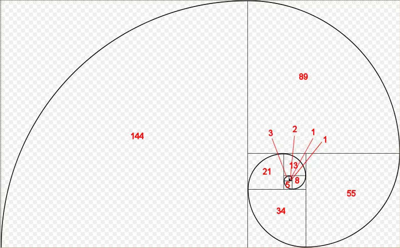

20.3 — Récursivité
Une fonction récursive en C++ est une fonction qui s'appelle elle-même. Voici un exemple de fonction récursive mal écrite :
#include <iostream>
void countDown(int count)
{
std::cout << "push " << count << '\n';
countDown(count-1); // countDown() s'appelle récursivement elle-même
}
int main()
{
countDown(5);
return 0;
}
Lorsque countDown(5) est appelée, « push 5 » est affiché, puis countDown(4) est appelée. countDown(4) affiche « push 4 » et appelle countDown(3). countDown(3) affiche « push 3 » et appelle countDown(2). La séquence où countDown(n) appelle countDown(n-1) se répète indéfiniment, ce qui forme l'équivalent récursif d'une boucle infinie.
Dans la leçon 20.2 -- La pile et le tas, vous avez appris que chaque appel de fonction place des données sur la pile d'appels. Comme la fonction countDown() ne retourne jamais (elle appelle simplement countDown() à nouveau), ces informations ne sont jamais retirées de la pile ! Par conséquent, à un moment donné, l'ordinateur va manquer de mémoire de pile, un dépassement de pile (stack overflow) se produira, et le programme plantera ou se terminera brutalement. Sur la machine de l'auteur, ce programme a compté à rebours jusqu'à -11732 avant de se terminer !
Note de l'auteur
Un appel terminal (tail call) est un appel de fonction qui se produit à la fin (la queue) d'une fonction. Les fonctions comportant des appels récursifs terminaux sont assez faciles à transformer par le compilateur en fonctions itératives (non récursives). Une telle fonction ne provoquerait pas l'épuisement de l'espace de pile dans l'exemple ci-dessus. Si vous exécutez le programme ci-dessus et qu'il tourne indéfiniment, c'est probablement ce qui s'est passé.
Conditions de terminaison récursive
Les appels de fonctions récursifs fonctionnent généralement comme les appels de fonctions ordinaires. Cependant, le programme ci-dessus illustre la différence la plus importante avec les fonctions récursives : vous devez inclure une condition de terminaison récursive, sans quoi elles s'exécuteront « pour toujours » (en réalité, jusqu'à ce que la pile d'appels soit épuisée). Une terminaison récursive est une condition qui, lorsqu'elle est remplie, fait cesser à la fonction récursive de s'appeler elle-même.
La terminaison récursive passe généralement par une instruction if. Voici notre fonction réécrite avec une condition de terminaison (et quelques affichages supplémentaires) :
#include <iostream>
void countDown(int count)
{
std::cout << "push " << count << '\n';
if (count > 1) // condition de terminaison
countDown(count-1);
std::cout << "pop " << count << '\n';
}
int main()
{
countDown(5);
return 0;
}
Lorsque nous exécutons ce programme, countDown() commence par afficher ce qui suit :
push 5
push 4
push 3
push 2
push 1
Si vous regardiez la pile d'appels à ce moment-là, vous verriez ceci :
countDown(1)
countDown(2)
countDown(3)
countDown(4)
countDown(5)
main()
Grâce à la condition de terminaison, countDown(1) n'appelle pas countDown(0) : le « if » n'est pas exécuté, donc elle affiche « pop 1 » puis se termine. À ce stade, countDown(1) est retirée de la pile, et le contrôle revient à countDown(2). countDown(2) reprend son exécution juste après l'appel à countDown(1), elle affiche donc « pop 2 » puis se termine. Les appels récursifs sont ensuite retirés de la pile un à un, jusqu'à ce que toutes les instances de countDown aient été supprimées.
Ainsi, ce programme affiche au total :
push 5
push 4
push 3
push 2
push 1
pop 1
pop 2
pop 3
pop 4
pop 5
Il est intéressant de noter que les affichages « push » se font dans l'ordre direct, puisqu'ils ont lieu avant l'appel récursif. Les affichages « pop » se font dans l'ordre inverse, car ils ont lieu après l'appel récursif, au moment où les fonctions sont retirées de la pile (ce qui se produit dans l'ordre inverse de leur empilement).
Un exemple plus utile
Maintenant que nous avons abordé le fonctionnement de base des appels récursifs, examinons une autre fonction récursive, un peu plus typique :
// retourne la somme de tous les entiers compris entre 1 (inclus) et sumto (inclus)
// retourne 0 pour les nombres négatifs
int sumTo(int sumto)
{
if (sumto <= 0)
return 0; // cas de base (condition de terminaison) lorsque l'utilisateur passe un argument inattendu (0 ou négatif)
if (sumto == 1)
return 1; // cas de base normal (condition de terminaison)
return sumTo(sumto - 1) + sumto; // appel récursif
}
Les programmes récursifs sont souvent difficiles à comprendre en les regardant seulement. Il est instructif de voir ce qui se passe lorsque nous appelons une fonction récursive avec une valeur donnée. Voyons donc ce qui se passe lorsque nous appelons cette fonction avec le paramètre sumto = 5.
sumTo(5) appelée, 5 <= 1 est faux, donc nous retournons sumTo(4) + 5.
sumTo(4) appelée, 4 <= 1 est faux, donc nous retournons sumTo(3) + 4.
sumTo(3) appelée, 3 <= 1 est faux, donc nous retournons sumTo(2) + 3.
sumTo(2) appelée, 2 <= 1 est faux, donc nous retournons sumTo(1) + 2.
sumTo(1) appelée, 1 <= 1 est vrai, donc nous retournons 1. C'est la condition de terminaison.
Nous dépilons maintenant la pile d'appels (chaque fonction est retirée de la pile au moment où elle retourne) :
sumTo(1) retourne 1.
sumTo(2) retourne sumTo(1) + 2, soit 1 + 2 = 3.
sumTo(3) retourne sumTo(2) + 3, soit 3 + 3 = 6.
sumTo(4) retourne sumTo(3) + 4, soit 6 + 4 = 10.
sumTo(5) retourne sumTo(4) + 5, soit 10 + 5 = 15.
À ce stade, il est plus facile de voir que nous additionnons les nombres compris entre 1 et la valeur passée en argument (bornes incluses).
Comme les fonctions récursives sont difficiles à comprendre à la simple lecture, de bons commentaires sont particulièrement importants.
Notez que dans le code ci-dessus, nous effectuons l'appel récursif avec la valeur sumto - 1 plutôt que --sumto. Nous procédons ainsi parce que operator-- a un effet de bord, et utiliser plus d'une fois une variable ayant un effet de bord dans une même expression produit un comportement indéfini. Utiliser sumto - 1 évite les effets de bord, ce qui permet d'utiliser sumto plusieurs fois dans l'expression en toute sécurité.
Algorithmes récursifs
Les fonctions récursives résolvent généralement un problème en trouvant d'abord (récursivement) la solution d'un sous-ensemble du problème, puis en modifiant cette sous-solution pour obtenir la solution finale. Dans l'algorithme ci-dessus, sumTo(value) calcule d'abord sumTo(value-1), puis ajoute la valeur de la variable value pour obtenir la solution de sumTo(value).
Dans de nombreux algorithmes récursifs, certaines entrées produisent des sorties triviales. Par exemple, sumTo(1) donne trivialement 1 (vous pouvez le calculer de tête) et ne nécessite aucune récursion supplémentaire. Les entrées pour lesquelles un algorithme produit trivialement un résultat s'appellent des cas de base. Les cas de base jouent le rôle de conditions de terminaison pour l'algorithme. On peut souvent les identifier en considérant la sortie pour une entrée valant 0, 1, « », ” ou null.
Nombres de Fibonacci
L'un des algorithmes récursifs mathématiques les plus célèbres est la suite de Fibonacci. Les suites de Fibonacci apparaissent à de nombreux endroits dans la nature, comme les ramifications des arbres, la spirale des coquillages, les fleurons d'un ananas, la crosse déroulée d'une fougère ou la disposition des écailles d'une pomme de pin.
Voici une image d'une spirale de Fibonacci :

Chacun des nombres de Fibonacci correspond à la longueur du côté du carré dans lequel il apparaît.
Les nombres de Fibonacci sont définis mathématiquement ainsi :
| F(n) = | 0 si n = 0 1 si n = 1 f(n-1) + f(n-2) si n > 1 |
Il est donc assez simple d'écrire une fonction récursive (peu efficace) calculant le n-ième nombre de Fibonacci :
#include <iostream>
int fibonacci(int count)
{
if (count == 0)
return 0; // cas de base (condition de terminaison)
if (count == 1)
return 1; // cas de base (condition de terminaison)
return fibonacci(count-1) + fibonacci(count-2);
}
// Et un programme principal affichant les 13 premiers nombres de Fibonacci
int main()
{
for (int count { 0 }; count < 13; ++count)
std::cout << fibonacci(count) << ' ';
return 0;
}
L'exécution du programme produit le résultat suivant :
0 1 1 2 3 5 8 13 21 34 55 89 144
Vous remarquerez qu'il s'agit exactement des nombres qui apparaissent dans le schéma de la spirale de Fibonacci.
Algorithmes de mémoïsation
L'algorithme récursif de Fibonacci présenté ci-dessus n'est pas très efficace, en partie parce que chaque appel pour un cas non trivial déclenche deux nouveaux appels à fibonacci. Cela produit un nombre exponentiel d'appels de fonction (en fait, l'exemple ci-dessus appelle fibonacci() 1205 fois !). Il existe des techniques permettant de réduire le nombre d'appels nécessaires. L'une d'elles, appelée mémoïsation (memoization), met en cache les résultats des appels de fonction coûteux, afin de pouvoir renvoyer le résultat lorsque la même entrée se présente à nouveau.
Voici une version mémoïsée de l'algorithme récursif de Fibonacci :
#include <iostream>
#include <vector>
// Merci à potterman28wxcv pour une variante de ce code
// count est maintenant un std::size_t pour faciliter l'indexation du std::vector
int fibonacci(std::size_t count)
{
// Nous utilisons un std::vector statique pour mettre en cache les résultats calculés
static std::vector results{ 0, 1 };
// Si nous avons déjà rencontré ce count, nous utilisons le résultat mis en cache
if (count < std::size(results))
return results[count];
// Sinon, nous calculons le nouveau résultat et l'ajoutons
results.push_back(fibonacci(count - 1) + fibonacci(count - 2));
return results[count];
}
// Et un programme principal affichant les 13 premiers nombres de Fibonacci
int main()
{
for (int count { 0 }; count < 13; ++count)
std::cout << fibonacci(static_cast<std::size_t>(count)) << ' ';
return 0;
}
Cette version mémoïsée effectue 35 appels de fonction, ce qui est bien meilleur que les 1205 de l'algorithme original.
Récursivité ou itération
Une question souvent posée à propos des fonctions récursives est : « Pourquoi utiliser une fonction récursive si l'on peut accomplir beaucoup de ces tâches de manière itérative (avec une boucle for ou une boucle while) ? ». Il s'avère qu'un problème récursif peut toujours être résolu de manière itérative. Cependant, pour les problèmes non triviaux, la version récursive est souvent beaucoup plus simple à écrire (et à lire). Par exemple, il est possible d'écrire la fonction de Fibonacci de manière itérative, mais c'est un peu plus difficile ! (Essayez, pour voir !)
Les fonctions itératives (celles utilisant une boucle for ou while) sont presque toujours plus efficaces que leurs équivalents récursifs. En effet, chaque appel de fonction entraîne un certain surcoût lié à l'empilement et au dépilement des cadres de pile. Les fonctions itératives évitent ce surcoût.
Cela ne signifie pas pour autant que les fonctions itératives soient toujours le meilleur choix. Parfois, l'implémentation récursive d'une fonction est tellement plus claire et facile à suivre que le léger surcoût supplémentaire en vaut largement la peine pour la maintenabilité, en particulier si l'algorithme n'a pas besoin de trop de récursions pour trouver une solution.
En général, la récursivité est un bon choix lorsque la plupart des conditions suivantes sont réunies :
- Le code récursif est beaucoup plus simple à implémenter.
- La profondeur de récursion peut être limitée (par exemple, il n'existe aucune entrée qui puisse provoquer une récursion sur 100 000 niveaux).
- La version itérative de l'algorithme nécessiterait de gérer une pile de données.
- Il ne s'agit pas d'une portion de code critique pour les performances.
Cependant, si l'algorithme récursif est plus simple à implémenter, il peut être judicieux de commencer par une version récursive, puis de l'optimiser ultérieurement en un algorithme itératif.
Bonne pratique
En général, privilégiez l'itération à la récursivité, sauf lorsque la récursivité a réellement du sens.
Temps de quiz
- La factorielle d'un entier N (notée N!) est définie comme le produit (la multiplication) de tous les nombres compris entre 1 et N (0! = 1). Écrivez une fonction récursive appelée factorial qui retourne la factorielle de son argument. Testez-la avec les 7 premières factorielles.
Indice : rappelez-vous que (x * y) = (y * x), donc le produit de tous les nombres compris entre 1 et N est le même que le produit de tous les nombres compris entre N et 1.
Solution
#include <iostream>
int factorial(int n)
{
if (n <= 0)
return 1;
return factorial(n - 1) * n;
}
int main()
{
for (int count { 0 }; count < 7; ++count)
std::cout << factorial(count) << '\n';
}
- Écrivez une fonction récursive qui prend un entier en entrée et retourne la somme de chacun de ses chiffres (par exemple, 357 = 3 + 5 + 7 = 15). Affichez la réponse pour l'entrée 93427 (ce qui donne 25). Supposez que les valeurs d'entrée sont positives.
Solution
#include <iostream>
int sumDigits(int x)
{
if (x < 10)
return x;
return sumDigits(x / 10) + x % 10;
}
int main()
{
std::cout << sumDigits(93427);
}
3a) Celui-ci est légèrement plus délicat. Écrivez un programme qui demande à l'utilisateur de saisir un entier positif, puis utilise une fonction récursive pour afficher la représentation binaire de ce nombre. Utilisez la méthode 1 de la leçon O.4 -- Conversion d'entiers entre représentation binaire et décimale.
Indice : avec la méthode 1, nous voulons afficher les bits dans l'ordre inverse. Cela signifie que votre instruction d'affichage doit se trouver après l'appel récursif.
Solution
#include <iostream>
// Merci au lecteur Gapo pour cette solution
void printBinary(int x)
{
// Cas de terminaison
if (x == 0)
return;
// Récursion vers le bit suivant
printBinary(x / 2);
// Affiche les restes (dans l'ordre inverse)
std::cout << x % 2;
}
int main()
{
int x;
std::cout << "Enter a positive integer: ";
std::cin >> x;
printBinary(x);
}
3b) Bonus : modifiez votre code de 3a pour gérer le cas où l'utilisateur saisit 0 ou un nombre négatif.
Voici un exemple de sortie (en supposant des entiers sur 32 bits) :
Enter an integer: -15
11111111111111111111111111110001
Indice : votre fonction printBinary() n'a pas réellement besoin de gérer les nombres négatifs. Si vous lui passez une valeur positive ayant la même représentation binaire que le nombre négatif, elle produira la bonne sortie.
Indice
Indice : convertir entre signé et non signé ne modifie pas la représentation binaire, seulement la manière dont la valeur est interprétée. Par exemple, l'entier signé -15 a la représentation binaire 11111111111111111111111111110001, identique à celle de l'entier non signé 4294967281.
Indice
Indice : une valeur signée peut être positive ou négative, alors qu'une valeur non signée est toujours positive…
Solution
// Merci au lecteur Donlod pour cette solution
#include <iostream>
void printBinary(unsigned int n)
{
if (n > 1) // nous ne récursons que si n > 1, c'est donc notre cas de terminaison pour n == 0
{
printBinary(n / 2);
}
std::cout << n % 2;
}
int main()
{
int x{};
std::cout << "Enter an integer: ";
std::cin >> x;
printBinary(static_cast<unsigned int>(x));
}
Comme le notent les indices, convertir entre signé et non signé ne change pas la représentation binaire, seulement la façon dont la valeur est interprétée. Ainsi, si nous stockons la saisie de l'utilisateur dans un int signé, puis que nous la convertissons en unsigned int, nous obtenons une valeur toujours positive ayant la même représentation binaire que la valeur signée saisie. Notre fonction n'a donc besoin de traiter que des nombres positifs.
Source originale : https://www.learncpp.com/cpp-tutorial/recursion/